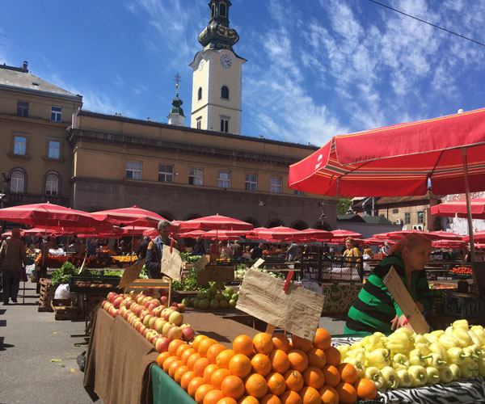
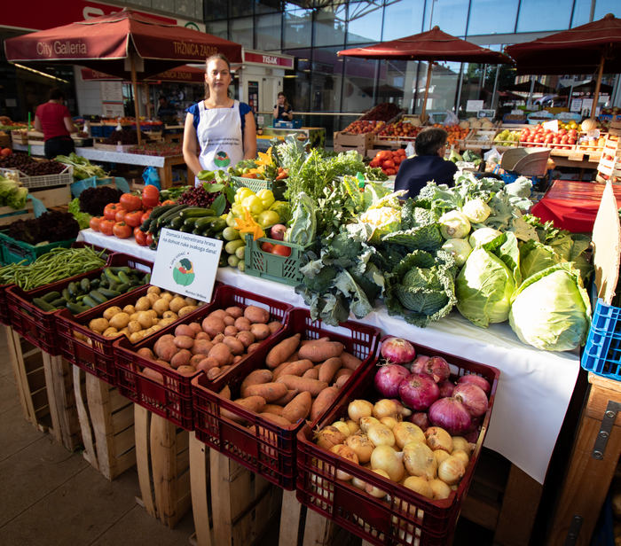
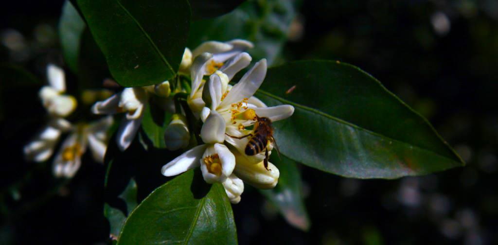
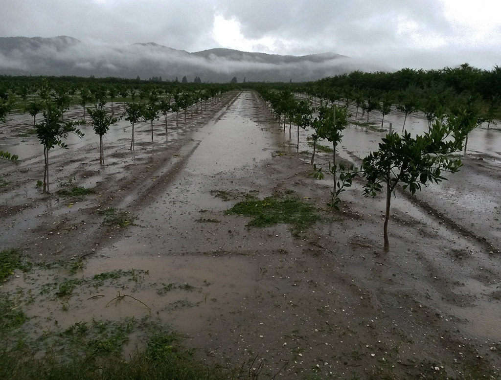
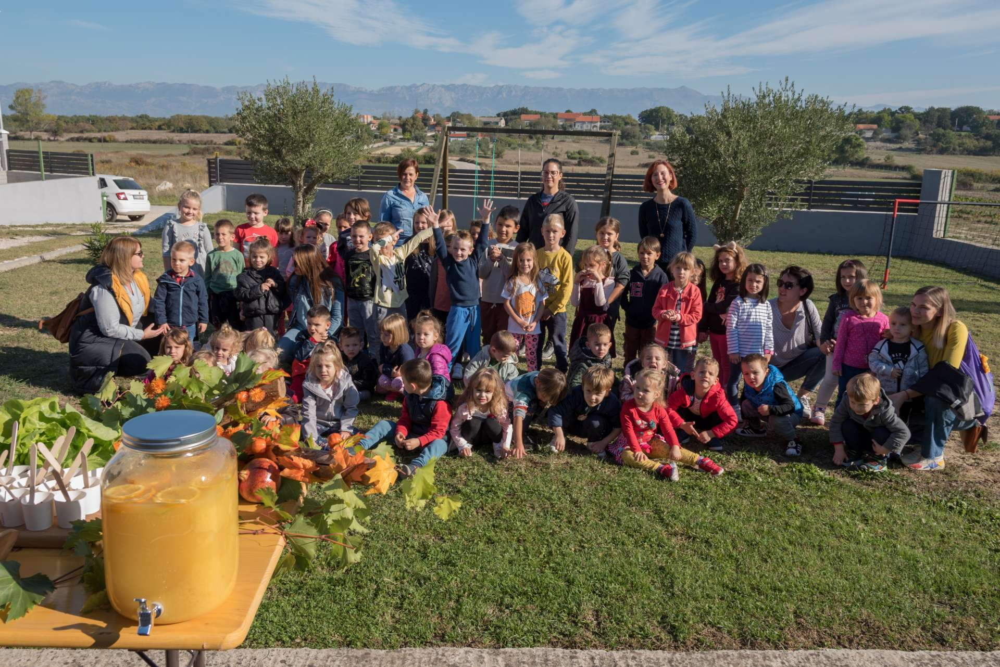
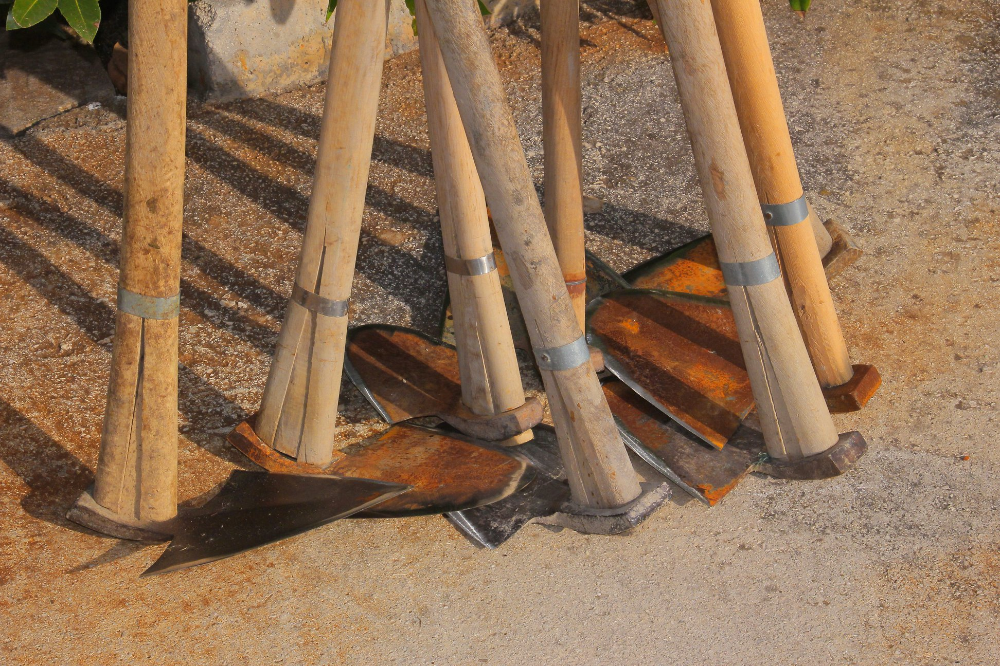

Domaća i netretirana sezonska hrana na tržnici
na Dolcu svakoga dana!
OPG Čudesna šuma
Koja je naša misija?
Mi smo obiteljski OPG koji se već deset godina brine da na stolu svakoga dana imate domaće voće i povrće koje nije tretirano pesticidima.
Hrana je za nas izvor snage, sreće i zdravlja te želimo da to bude i vama!

Sezonsko voće i povrće
Zašto kupovati od nas?
Osjetite bogatstvo okusa sezonskog voća i povrća, badema i jaja s lokalnih polja u Briševu i Murvici. Naši proizvodi nisu samo zdravi, oni su i izrazito ukusni.
Uživajte u slatkoći mlade mrkve i blitve iz polja, mirisu domaće dinje, svježini nešpricane zelene salate. Osjetite razliku u okusu i energiji koju vam daje. Jedite sezonsko, podržite lokalno!
Sigurno i ukusno!
Svježe s polja!
Naši proizvodi pogodni su za osobe koje pate od alergija, kao i za one
najmlađe jer nisu tretirani pesticidima. Kupujte mirno i uživajte u kvalitetnoj hrani po
pristupačnim cijenama!

Posjetite nas!
Pronađite nas na tržnici svakoga dana osim nedjelje, od 7 do 13:30 sati.
Rado ćemo vam odgovoriti na sva pitanja i pomoći u odabiru voća i povrća koje najbolje odgovara vašim potrebama.
Ako želite, posjetiti nas možete i na našem OPG-u te se uvjeriti u podrijetlo naših proizvoda!

Godina 2023 je godina promjena u načinu rada na našem obiteljskom poljoprivrednom gospodarstvu i godina uspješne suradnje s kupcima.
Za početak, u našim promišljanjima, stavovima prema proizvodnji, nastaje veliki preokret. Okrećemo se ekološkoj proizvodnji, te od nadzornih stanica dobivamo certifikat ekološke proizvodnje u prijelaznom periodu (što nas čini izuzetno sretnima).

Nekoliko godina na svojim parcelama ne koristimo sustav za navodnjavanje. Agrumi i masline se napajaju kišom. Tako gubimo na količini ali dobivamo na izvrsnoj kvaliteti plodova.

Djeca oduševljena programom Tanjur pun zdravlja od prvoga dana!
„Djeca su jedva dočekala staviti ruke u zemlju i zasaditi salatu i mladu kapulu koju će, za sljedećeg posjeta i ubrati. Ne samo što su pokazala interes za boravkom na OPG-u i ovakvom vrstom aktivnosti na svježem zraku već su se iskazala i strpljenjem za što uvelike imamo zahvaliti divnim tetama iz dječjeg vrtića Ribica“, kaže Izabela Laura, koordinatorica programa.

MOTIKOM DO PRIRODNOG SKLADA.
Na našim poljima, koje nastojimo održavati u skladu s načelima prirode, motika je najvažniji alat. Što reći o motici? Najstariji poljoprivredni alat u povijesti. Veoma je svrhovita i svestrana, naročito dok su voćke još mlade. Služi za mnoge vrste obrade tla, za finu obradu tla, razbijanje pokorice, prozračnost korijena voćke, zadržavanje vlage, uništavanje korova.